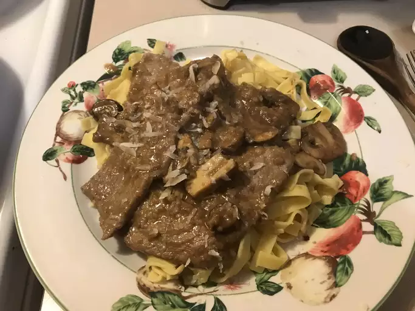

Veal Marsala/h1>
allrecipes link

Description
This veal Marsala recipe is simple to make but elegant enough to impress your guests! Stir in a few tablespoons of cream before serving, if desired. Garnish with cherry tomatoes and parsley.
Ingredients
- 2 pounds veal cutlets
- 0.25 cup all-purpose flour
- 0.5 teaspoon seasoning salt
- 0.5 cup butter
- 2 tablespoons olive oil
- 0.75 pound fresh mushrooms, quartered
- 0.25 cup Marsala wine
Steps
- Place veal between 2 sheets of heavy plastic on a solid, level surface. Firmly pound veal with the smooth side of a meat mallet to a 1/4-inch thickness.
- Combine flour and seasoning salt in a shallow dish; dredge veal in flour mixture and let rest on a wire rack for 15 minutes.
- Melt butter and oil in a large skillet over medium-high heat. Add floured cutlets and cook until browned, about 1 1/2 minutes on each side. Add mushrooms, reduce heat to low, cover, and cook until tender, about 8 to 10 minutes.
- Pour in Marsala and simmer until veal is tender and sauce is hot, about 5 minutes more. Serve immediately.